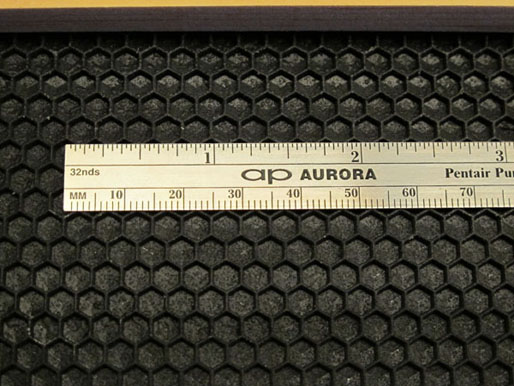
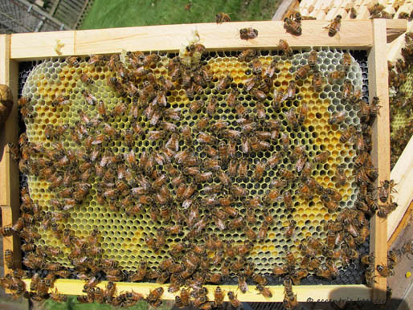

Honey Color Guide | Toolbox | Swarm Catcher | Local Pollinator Photos | Videos | Warré Hive Entrance Modifications | Contact
Warré Size Frames
Èmile Warré developed his "la Ruche Populaire" based on his experience with various designs at a time before the parasitic mite, Varroa destructor. Alternative managment methods use the standard Warré hive-body box design yet permit the easy removal of combs for colony inspection, mite monitoring, queen rearing and honey harvesting by using specially sized Hoffman style self-spacing frames.
Foundationless Frame
"If the deep frame is greatly advantageous in winter, just as in early spring, it may have its inconveniences in summer. If there is a residue of stores, when there have been some small amounts of nectar coming in, there may be a band of honey at the top of the frame. But bees greatly dislike crossing over honey. They rise with difficulty into the super and often prefer to swarm. This is why bees go up into supers sooner in hives with shallow frames."
― Abbé Èmile Warré, Beekeeping For All (1948), Translation by David and Patricia Heaf
The special sized Hoffman style self-spacing frames fit into a standard Warré boxes with "bee space" clearance at the sides and bottom and can be used with nadired or supered management styles.
Top-bar: Length 315 x width 27 x thickness 19 (mm)
Side-bars: Length 171 (inside) 200 (outer) x width 34 (upper) 26 (lower) x thickness 10 (mm)
Bottom-bar: Length 303 x width 19 x thickness 9 (mm)
Top-bar lug: 15 (mm)
Number of frames: 8
Rebate for frame lugs: Depth 10 x width 10 (mm)
Single box internal size: 300 x 300 x 210 (mm), 18.9 liter
Single box exterior size: 360 x 360 x 210 (mm)
Shallow Super Foundationless Frame
The special sized shallow super Hoffman style self-spacing frames fit into specially sized Warré shallow supers with "bee space" clearance at the sides and bottom and can be used with supered management styles. The framed shallow super is an excellent alternative for comb honey production during strong nectar flows.
Top-bar: Length 338 x width 27 x thickness 19 (mm)
Side-bars: Length 110 (inside) 138 (outer) x width 34 (upper) 26 (lower) x thickness 13 (mm)
Bottom-bar: Length 303 x width 19 x thickness 9 (mm)
Top-bar lug: 17 (mm)
Number of frames: 8
Rebate for frame lugs: Depth 10 x width 12 (mm)
Shallow super internal size: 318 x 318 x 150 (mm), 15.2 liter
Shallow super exterior size: 360 x 360 x 150 (mm)
Double Deep Foundationless Frame
"Moreover, the shape of a hive of eight 300 x 400 mm frames approaches the shape of a swarm and allows the bees to put more honey above their cluster, which favours good wintering, even in cases of prolonged cold."
― Abbé Èmile Warré, Beekeeping For All (1948), Translation by David and Patricia Heaf
The special sized double deep Hoffman style self-spacing frames fit into two stacked standard Warré boxes with "bee space" clearance at the sides and bottom and provide extended uninterrupted brood combs. Double stacked Warré boxes are supered with a shallow box during strong nectar flows for honey production.
Top-bar: Length 315 x width 27 x thickness 19 (mm)
Side-bars: Length 381 (inside) 410 (outer) x width 34 (upper) 26 (lower) x thickness 10 (mm)
Bottom-bar: Length 285 x width 20 x thickness 10 (mm)
Top-bar lug: 15 (mm)
Number of frames: 8
Rebate for frame lugs: Depth 10 x width 10 (mm)
Mid-frame spale: Diameter 3 (mm)
Stacked double box internal size: 300 x 300 x 420 (mm), 37.8 liter
Stacked double box exterior size: 360 x 360 x 420 (mm)
4.9 mm* Foundation Frame
The special sized Hoffman style self-spacing frames with 4.9 mm* plastic foundation fit into a standard Warré boxes with "bee space" clearance at the sides and bottom and can be used with nadired or supered management styles.


Top-bar: Length 315 x width 25 x thickness 18 (mm)
Side-bars: Length 171 (inside) 200 (outer) x width 34 (upper) 26 (lower) x thickness 8 (mm)
Bottom-bar: Length 303 x width 19 x thickness 9 (mm)
Top-bar lug: 15 (mm)
Number of frames: 8
Rebate for frame lugs: Depth 10 x width 10 (mm)
Single box internal size: 300 x 300 x 210 (mm), 18.9 liter
Single box exterior size: 360 x 360 x 210 (mm)
Natural Comb
During a study of feral honey bee nests in hollow trees of North America the average brood comb cell diameter was found to be 5.2 mm for worker cells and 6.2 mm for drone cells. The average brood comb cell depth was 11 mm for worker cells and 12.5 mm for drone cells. Honey comb cell size was variable with cells of various diameters and depths. Natural foundationless comb drawn by the bees free of wax foundation is encouraged.

This site is licensed under a Creative Commons
Attribution-NonCommercial-ShareAlike 3.0 Unported License.
Updated 24 February 2013 | eccentric beekeeper